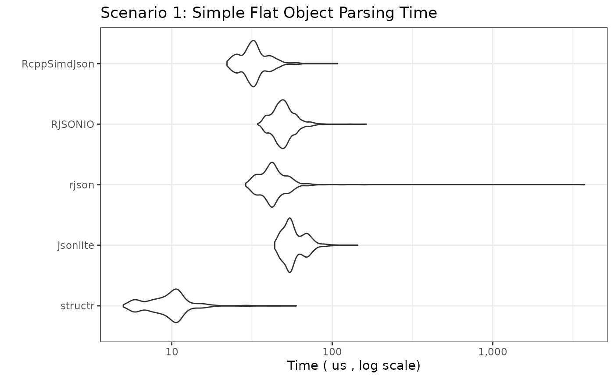
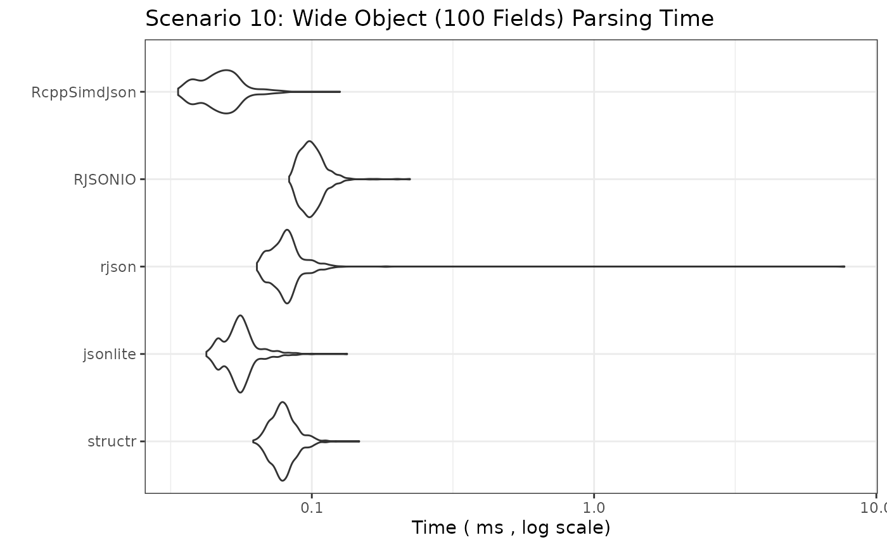

Introduction
This document benchmarks the performance of different R packages for parsing JSON strings into R objects. We compare:
-
structr: Parses JSON and simultaneously validates it against a predefined schema (implemented in Rust usingserdeandsimd-json). -
jsonlite: A widely used, robust JSON parser (implemented in C). -
rjson: Another JSON parser (implemented in C). -
RJSONIO: A versatile JSON parser, often used for interfacing with web APIs (implemented in C). -
RcppSimdJson: A high-performance JSON parser based onsimdjson, which is known for its speed and efficiency (implemented in C++).
The goal is to compare parsing speed across a wider range of JSON structures, from simple atomic values to large arrays and deeply nested objects.
Benchmark Setup
We will test several scenarios representing common and challenging
JSON structures. For structr, we pre-build the required
structure definitions outside the timed benchmark loop, reflecting
typical usage (define the structure once, parse many times).
Disclaimer
If you are reading this vignette on GitHub Pages, the benchmarks ran in GitHub Actions. The results will differ every time they run depending on many factors. If you want a true realistic benchmark, run the code in your own environment.
JSON Data and structr Schemas
The schemas and JSON objects are defined in the source code of this document. Since the values can be long, they are hidden from the final output, however, they are fully available in the source code.
Benchmarking Parameters
# Number of times to run each benchmark expression
# Adjust down for slower scenarios if needed
benchmark_times_fast <- 1000
benchmark_times_medium <- 500
benchmark_times_slow <- 100
# Unit for reporting timings
benchmark_unit_fast <- "us" # microseconds
benchmark_unit_medium <- "ms" # milliseconds
benchmark_unit_slow <- "ms" # millisecondsBenchmark Results
We now run the benchmarks for each scenario. The plots show the
distribution of execution times (lower is better). Note the Y-axis is
often on a logarithmic scale due to potentially large performance
differences. We use check = "equal" or wrap
fromJSON calls in try() for complex cases
where strict equality might fail due to floating point differences or
minor structural variations between parsers, focusing instead on raw
speed.
Scenario 1: Simple Flat Object
bm_simple_object <- microbenchmark(
structr = structr::parse_json(json_simple_object, structr_simple_object),
jsonlite = jsonlite::fromJSON(json_simple_object, simplifyDataFrame = FALSE),
rjson = rjson::fromJSON(json_simple_object),
RJSONIO = RJSONIO::fromJSON(json_simple_object, simplify = FALSE),
RcppSimdJson = RcppSimdJson::fparse(json_simple_object),
times = benchmark_times_fast, unit = benchmark_unit_fast, check = "equal"
)
print_and_plot(bm_simple_object,
title = "Scenario 1: Simple Flat Object Parsing Time",
y_label = paste("Time (", benchmark_unit_fast, ", log scale)")
)## Unit: microseconds
## expr min lq mean median uq max neval
## structr 4.739 7.6195 9.531368 9.6075 10.7400 34.294 1000
## jsonlite 42.359 50.8900 57.474889 54.3760 63.5180 150.040 1000
## rjson 28.032 36.9490 45.327698 41.5925 46.6675 2754.062 1000
## RJSONIO 35.386 43.6870 49.420515 48.2950 53.4000 112.721 1000
## RcppSimdJson 20.979 28.3025 32.683047 31.7790 35.4560 69.149 1000
Scenario 2: Simple Array (Integers, 50 items)
bm_simple_array_int <- microbenchmark(
structr = structr::parse_json(json_simple_array_int, structr_simple_array_int),
jsonlite = jsonlite::fromJSON(json_simple_array_int), # simplify = TRUE default good here
rjson = rjson::fromJSON(json_simple_array_int),
RJSONIO = RJSONIO::fromJSON(json_simple_array_int), # simplify = TRUE default good here
RcppSimdJson = RcppSimdJson::fparse(json_simple_array_int),
times = benchmark_times_fast, unit = benchmark_unit_fast, check = "equal"
)
print_and_plot(bm_simple_array_int,
title = "Scenario 2: Simple Array (Integers) Parsing Time",
y_label = paste("Time (", benchmark_unit_fast, ", log scale)")
)## Unit: microseconds
## expr min lq mean median uq max neval
## structr 3.827 6.0865 7.612567 7.8450 8.926 27.732 1000
## jsonlite 32.220 37.8110 41.422558 41.0520 43.581 82.504 1000
## rjson 32.211 38.3315 43.097983 43.3655 46.246 114.724 1000
## RJSONIO 45.965 53.3795 61.123997 57.5125 60.924 3058.931 1000
## RcppSimdJson 21.270 26.0485 30.165365 30.5470 32.816 83.606 1000
Scenario 3: Simple Array (Strings, 26 items)
bm_simple_array_str <- microbenchmark(
structr = structr::parse_json(json_simple_array_str, structr_simple_array_str),
jsonlite = jsonlite::fromJSON(json_simple_array_str),
rjson = rjson::fromJSON(json_simple_array_str),
RJSONIO = RJSONIO::fromJSON(json_simple_array_str),
RcppSimdJson = RcppSimdJson::fparse(json_simple_array_str),
times = benchmark_times_fast, unit = benchmark_unit_fast, check = "equal"
)
print_and_plot(bm_simple_array_str,
title = "Scenario 3: Simple Array (Strings) Parsing Time",
y_label = paste("Time (", benchmark_unit_fast, ", log scale)")
)## Unit: microseconds
## expr min lq mean median uq max neval
## structr 4.027 6.3515 7.577301 7.8150 8.7210 31.419 1000
## jsonlite 25.648 30.4770 33.981053 33.5525 35.7825 73.928 1000
## rjson 30.136 36.1425 40.461900 40.5205 43.0855 123.150 1000
## RJSONIO 41.737 48.3950 52.873817 52.1170 55.3340 152.876 1000
## RcppSimdJson 21.651 26.4750 33.131584 30.3515 32.5210 3058.911 1000
Scenario 4: Nested Object
bm_nested_object <-
microbenchmark(
structr = structr::parse_json(json_nested_object, structr_nested_object),
jsonlite = jsonlite::fromJSON(json_nested_object, simplifyVector = FALSE),
rjson = rjson::fromJSON(json_nested_object),
RJSONIO = RJSONIO::fromJSON(json_nested_object, simplify = FALSE), # avoid matrix/df conversion
RcppSimdJson = RcppSimdJson::fparse(json_nested_object),
times = benchmark_times_fast, unit = benchmark_unit_fast, check = NULL # Disable check due to potential minor diffs
)
print_and_plot(bm_nested_object,
title = "Scenario 4: Nested Object Parsing Time",
y_label = paste("Time (", benchmark_unit_fast, ", log scale)")
)## Unit: microseconds
## expr min lq mean median uq max neval
## structr 17.322 22.8525 25.73599 26.0490 27.9120 70.802 1000
## jsonlite 25.969 34.0340 40.95289 37.7005 40.1900 2946.371 1000
## rjson 41.428 51.7920 57.20000 57.3970 60.8890 123.110 1000
## RJSONIO 54.662 64.5460 71.17018 70.0960 74.7045 179.987 1000
## RcppSimdJson 29.305 37.2950 43.35819 43.6370 46.9630 136.004 1000
Scenario 5: Array of Simple Objects (100 Objects)
bm_array_of_objects <-
microbenchmark(
structr = structr::parse_json(json_array_of_objects, structr_array_of_objects),
jsonlite = jsonlite::fromJSON(json_array_of_objects, simplifyVector = FALSE, simplifyDataFrame = FALSE), # Force list output
rjson = rjson::fromJSON(json_array_of_objects),
RJSONIO = RJSONIO::fromJSON(json_array_of_objects, simplify = FALSE), # Results in list of lists
RcppSimdJson = RcppSimdJson::fparse(json_array_of_objects),
times = benchmark_times_medium, unit = benchmark_unit_medium, check = NULL
)
print_and_plot(bm_array_of_objects,
title = "Scenario 5: Array of 100 Objects Parsing Time",
y_label = paste("Time (", benchmark_unit_medium, ", log scale)")
)## Unit: milliseconds
## expr min lq mean median uq max neval
## structr 0.174186 0.2154325 0.23050698 0.2263430 0.2425380 1.699343 500
## jsonlite 0.121366 0.1523145 0.17155583 0.1604500 0.1672930 3.532615 500
## rjson 0.160469 0.1769355 0.19340343 0.1901850 0.2074275 0.325307 500
## RJSONIO 0.252802 0.2716820 0.28294108 0.2797825 0.2915600 0.409123 500
## RcppSimdJson 0.055283 0.0671510 0.08172379 0.0777400 0.0958390 0.150201 500
Scenario 6: Large Array of Simple Objects (1000 Objects)
bm_large_array_of_objects <-
microbenchmark(
structr = structr::parse_json(json_large_array_of_objects, structr_large_array_of_objects),
jsonlite = jsonlite::fromJSON(json_large_array_of_objects, simplifyVector = FALSE, simplifyDataFrame = FALSE),
rjson = rjson::fromJSON(json_large_array_of_objects),
RJSONIO = RJSONIO::fromJSON(json_large_array_of_objects, simplify = FALSE),
RcppSimdJson = RcppSimdJson::fparse(json_large_array_of_objects),
times = benchmark_times_medium,
unit = benchmark_unit_medium,
check = NULL # Disable check
)
print_and_plot(bm_large_array_of_objects,
title = "Scenario 6: Array of 1000 Objects Parsing Time",
y_label = paste("Time (", benchmark_unit_medium, ", log scale)")
)## Unit: milliseconds
## expr min lq mean median uq max neval
## structr 1.986429 2.2419055 2.4553968 2.336216 2.473233 14.695656 500
## jsonlite 1.375197 1.4279660 1.5303207 1.451615 1.526545 7.036176 500
## rjson 1.336846 1.3897195 1.5510406 1.417456 1.586508 7.551719 500
## RJSONIO 2.025120 2.1868580 2.2916822 2.208829 2.270634 7.335415 500
## RcppSimdJson 0.338092 0.3614995 0.4206155 0.378687 0.408423 0.650985 500
Scenario 7: Large Integer Array (10,000 items)
bm_large_array_int <-
microbenchmark(
structr = structr::parse_json(json_large_array_int, structr_large_array_int),
jsonlite = jsonlite::fromJSON(json_large_array_int),
rjson = rjson::fromJSON(json_large_array_int),
RJSONIO = RJSONIO::fromJSON(json_large_array_int),
RcppSimdJson = RcppSimdJson::fparse(json_large_array_int),
times = benchmark_times_medium,
unit = benchmark_unit_medium,
check = "equal"
)
print_and_plot(bm_large_array_int,
title = "Scenario 7: Large Integer Array (10k) Parsing Time",
y_label = paste("Time (", benchmark_unit_medium, ", log scale)")
)## Unit: milliseconds
## expr min lq mean median uq max neval
## structr 0.185797 0.1936065 0.2078925 0.2000630 0.2204365 0.331228 500
## jsonlite 2.258808 2.6054090 2.7719932 2.6792170 2.7676675 12.109067 500
## rjson 1.039150 1.0654790 1.1567090 1.0788395 1.1047925 12.110981 500
## RJSONIO 2.554389 2.6021480 2.7123386 2.6177225 2.6400540 7.266867 500
## RcppSimdJson 0.189203 0.2030140 0.2203757 0.2122915 0.2365670 0.351796 500
Scenario 8: Large String Array (10,000 items)
bm_large_array_str <-
microbenchmark(
structr = structr::parse_json(json_large_array_str, structr_large_array_str),
jsonlite = jsonlite::fromJSON(json_large_array_str),
rjson = rjson::fromJSON(json_large_array_str),
RJSONIO = RJSONIO::fromJSON(json_large_array_str),
RcppSimdJson = RcppSimdJson::fparse(json_large_array_str),
times = benchmark_times_medium,
unit = benchmark_unit_medium,
check = "equal"
)
print_and_plot(bm_large_array_str,
title = "Scenario 8: Large String Array (10k) Parsing Time",
y_label = paste("Time (", benchmark_unit_medium, ", log scale)")
)## Unit: milliseconds
## expr min lq mean median uq max neval
## structr 0.674389 0.694186 0.7159985 0.7046555 0.7303840 1.102488 500
## jsonlite 2.252555 2.375455 2.5490808 2.4516975 2.6007410 12.412604 500
## rjson 1.299527 1.327723 1.4289570 1.3453065 1.3783135 5.973203 500
## RJSONIO 3.436827 3.497781 3.6296829 3.5207730 3.5551575 8.331405 500
## RcppSimdJson 0.634154 0.656706 0.6811816 0.6703460 0.7008585 1.223705 500
Scenario 9: Deeply Nested Object (10 levels)
bm_deep_nest <- microbenchmark(
structr = structr::parse_json(json_deep_nest, structr_deep_nest),
jsonlite = jsonlite::fromJSON(json_deep_nest, simplifyVector = FALSE, simplifyDataFrame = FALSE),
rjson = rjson::fromJSON(json_deep_nest),
RJSONIO = RJSONIO::fromJSON(json_deep_nest, simplify = FALSE),
RcppSimdJson = RcppSimdJson::fparse(json_deep_nest),
times = benchmark_times_fast,
unit = benchmark_unit_fast,
check = "equal"
)
print_and_plot(bm_deep_nest,
title = "Scenario 9: Deeply Nested Object (10 Levels) Parsing Time",
y_label = paste("Time (", benchmark_unit_fast, ", log scale)")
)## Unit: microseconds
## expr min lq mean median uq max neval
## structr 12.694 15.9150 17.94394 17.923 19.3360 56.666 1000
## jsonlite 16.431 19.8170 22.57456 22.452 24.1300 71.123 1000
## rjson 29.916 35.8120 40.18560 40.461 43.1355 110.686 1000
## RJSONIO 38.842 45.4745 136.76639 49.202 52.5380 87077.703 1000
## RcppSimdJson 23.263 27.8970 32.07394 32.035 34.3440 83.666 1000
Scenario 10: Wide Object (100 fields)
bm_wide_object <- microbenchmark(
structr = structr::parse_json(json_wide_object, structr_wide_object),
jsonlite = jsonlite::fromJSON(json_wide_object, simplifyVector = FALSE, simplifyDataFrame = FALSE),
rjson = rjson::fromJSON(json_wide_object),
RJSONIO = RJSONIO::fromJSON(json_wide_object, simplify = FALSE),
RcppSimdJson = RcppSimdJson::fparse(json_wide_object),
times = benchmark_times_medium,
unit = benchmark_unit_medium,
check = "equal"
)
print_and_plot(bm_wide_object,
title = "Scenario 10: Wide Object (100 Fields) Parsing Time",
y_label = paste("Time (", benchmark_unit_medium, ", log scale)")
)## Unit: milliseconds
## expr min lq mean median uq max neval
## structr 0.059050 0.0679365 0.07280493 0.0716240 0.0749045 0.115245 500
## jsonlite 0.039624 0.0495675 0.05371117 0.0532045 0.0560545 0.108112 500
## rjson 0.062907 0.0723400 0.08943322 0.0788620 0.0838970 5.003141 500
## RJSONIO 0.084147 0.0918615 0.10016670 0.0981340 0.1050160 0.185957 500
## RcppSimdJson 0.032791 0.0406510 0.04706820 0.0465415 0.0516110 0.116617 500